Матеріали Дентсплай · журнал «ДентАрт» 2014 №2 (75)
Натуральна естетика Церам-Ікс — запорука успіху реставрації
NATURAL AESTHETICS OF CERAM•X — THE KEY TO SUCCESS IN CREATING RESTORATION
У сучасній стоматології все більше простежується тенденція мінімально-інвазивних втручань, при яких забезпечується максимальне збереження твердих тканин зубів і їх біомеханіки. Незважаючи на широке застосування непрямих керамічних реставрацій, прямі композитні реставрації не здають своїх позицій і також залишаються затребуваними. Композитні матеріали сьогодні поліпшили свої естетичні показники і міцність, а низька вартість у порівнянні з керамічними реставраціями ще більше виправдовує їх використання для відновлення дефектів у фронтальній і бокових ділянках.
Для досягнення оптимального естетичного та функціонального результату лікар-стоматолог повинен знати особливості адгезивної стоматології, включаючи властивості композитних матеріалів, методики їх пошарового внесення, оптичні властивості природних зубів.
У зубі як в оптичній моделі можна виділити два основних шари: внутрішній і зовнішній. Внутрішній шар представлений дентином і задає основний колір зуба. Як правило, дентин має червонувато-жовтий колір, колірну насиченість у поєднанні з високою опаковістю. Зовнішній шар — емаль, яка визначає яскравість зуба і характеризується високою прозорістю та опалесценцією.
Ці знання лягли в основу розробки композитних матеріалів, що максимально імітують тверді тканини зубів. Одним з них є матеріал Церам-Ікс (Дентсплай)/CeramX (Dentsply) — нанокерамічний матеріал, запропонований для стоматологічної практики у двох системах: Церам-Ікс Моно+/CeramX Mono+ та Церам-Ікс дуо+/CeramX duo+ (фото 1, 2).
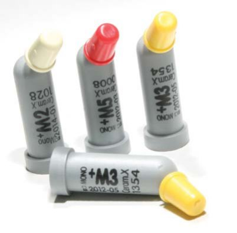
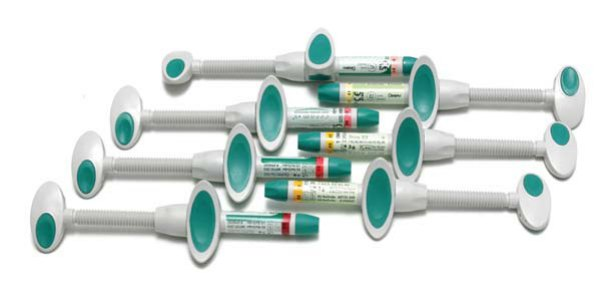
Поряд з традиційним скляним наповнювачем (76%) у складі Церам-Ікс присутня нанокерамічна частка (12%) — компонент технічної кераміки (метакрилат-модифікований полісилоксан) розміром 2-3 нм, яка визначає унікальні фізичні властивості матеріалу. Неорганічний компонент силоксан забезпечує міцність, роблячи нанокераміку стійкою до появи тріщин. Метакрилатна частина робить частинки сумісними і здатними до полімеризації з матрицею смоли, тим самим також визначаючи високу міцність композиту до навантажень. Тривалі віддалені результати (Церам-Ікс на ринку вже близько 10 років) засвідчують високу довговічність реставрацій.
У своїй практиці для визначення кольору зуба ми часто використовуємо класичну шкалу ВІТА Классікал Шейд Гуайд/Classical Shade Guide. За даними досліджень O'Браєн/O'Brien, розташування і розподіл відтінків ВІТА Классікал відбуваються впорядковано і згруповано в колірному просторі L*а*b* залежно від інтенсивності та яскравості. На підставі цих вимірів і розрахунків всю шкалу ВІТА Классікал можна розподілити на 7 основних груп, в кожну з яких входить до трьох відтінків. Ця концепція була застосована при розробці відтінків нанокерамічного композитного матеріалу Церам-Ікс.
Система Церам-Ікс Моно+ має середню прозорість і застосовується для швидкого відновлення порожнин жувальної групи зубів одним відтінком, який імітує одночасно і емаль, і дентин. Усього відтінків сім — від M1 до M7 (фото 3). Щоб встановити, який відтінок матеріалу Церам-Ікс Моно+ відповідає певному відтінку шкали ВІТА, пропонується шкала відповідності АйШейд/I-shade, яка поставляється в комплекті з матеріалом. Один-єдиний відтінок Церам-Ікс Моно+ дозволяє виконати реставрацію у боковій ділянці зубного ряду відносно просто. Але простота однак вимагає контролю, і при відновленні великих порожнин класів I і II не варто забувати про дотримання техніки пошарового внесення матеріалу для компенсації полімеризаційного стресу.
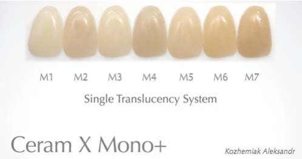
Із широким впровадженням у стоматологічну практику «розумного замінника дентину» ЕсДіАр/SDR (Дентсплай) реставрація бокових зубів переходить з категорії «просто» в категорію «дуже просто». За допомогою однієї порції композиту ЕсДіАр легко і швидко (за 20 сек) відновлюється «поверх» дентину. Таким чином лікар-стоматолог отримує додатковий час на ретельніше моделювання «поверху» емалі, жувальної поверхні зуба з композиту основної щільності, зокрема Церам-Ікс Моно+, що важливо для успіху проведеного лікування в подальшому (фото 4-8).
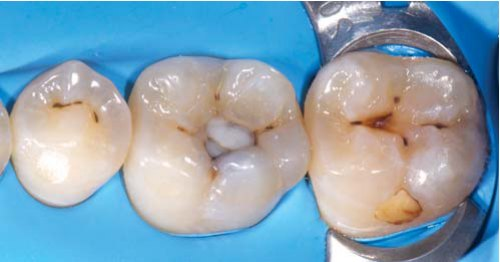
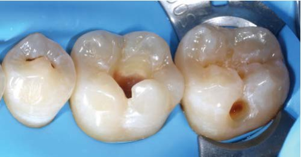
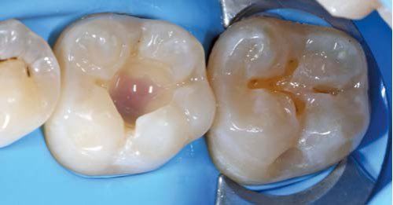
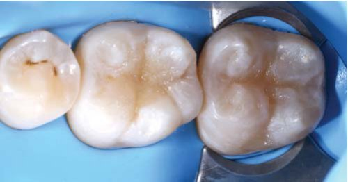
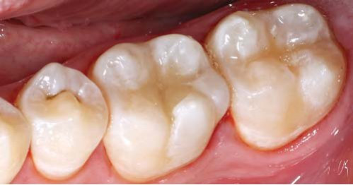
Система Церам-Ікс дуо+ відповідає концепції природної передачі відтінків, що базується на анатомії відновлюваних тканин, вона складається також із 7 основних відтінків (три емалі E1, E2, E3, чотири дентину D1, D2, D3, D4) і одного додаткового (для вибілених зубів DB) (фото 9). Колірна насиченість змінюється в бік збільшення від E1 до E3 і від D1 до D4. Концепція різної прозорості і насиченості для емалевих і дентинових відтінків відповідає відмінностям в оптичних властивостях природних емалі та дентину, вираженість яких спостерігається з віком пацієнта. Зуби молодих пацієнтів характеризуються значним обсягом і низькою колірною насиченістю дентину. Емаль таких зубів відносно світла і опакова. Емалевий шар добре виражений і повністю покриває дентин коронкової частини.
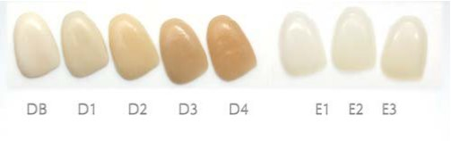
Найкращим вибором при реставрації таких зубів буде використання світлих відтінків D1-D2 і емалевого Е1. З віком емаль зубів стає прозорішою, а дентин набуває насиченішого відтінку. Для відновлення таких зубів рекомендовано використовувати дентинові відтінки D3-D4 і емалеві E2-E3. Для підбору відповідного відтінку дентину матеріалу Церам-Ікс дуо+ в техніці мокап ліпше орієнтуватися на пришийкову ділянку природного зуба, де товщина емалі найменша. Рекомендується надавати перевагу темнішому відтінку дентину — через те, що емалевий шар трохи освітлить його в результаті оптичних ефектів. Емалевий відтінок матеріалу Церам-Ікс дуо+ краще визначати по ріжучому краю або інтерпроксимальних ділянках натурального зуба.
Для підбору відтінків зуба можна також орієнтуватися на класичну шкалу ВІТА Классікал і шкалу відповідності Ай-Шейд. Комбінуючи відтінки дентину і емалі Церам-Ікс дуо+, можна отримати потрібний колір. Такий розподіл відтінків дозволяє перекрити всю колірну шкалу, використовуючи в роботі лише 7 шприців. Це є перевагою і з економічної точки зору.
Для маскування зміненого в кольорі дентину або за необхідності замаскувати штифт рекомендується використовувати відтінок DB (Dentin Bleach) Церам-Ікс дуо+, бо він найбільш опаковий. Після блокування дисколориту слід вносити вибрані відтінки дентину й емалі, визначені за різноколіркою Ай-Шейд.
Емалеві відтінки відрізняються вираженою властивістю опалесценції. При прямому освітленні емалевого шару спостерігаються блакитні відблиски, а під переломленим світлом — янтарно-помаранчеве світіння, що створює видимий ефект «живої» реставрації — гри світла всередині відновленого зуба (фото 10).
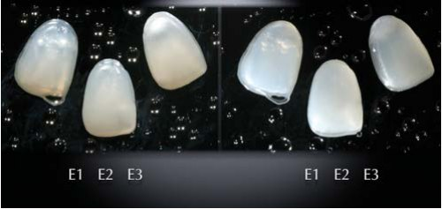
При реставрації фронтальної групи зубів за допомогою композитного матеріалу Церам-Ікс дуо+ рекомендовано починати виконувати роботу з побудови піднебінної стінки (фото 11-13). Для цих цілей краще використовувати заздалегідь підготований силіконовий ключ із заданими контурами піднебінної стінки.
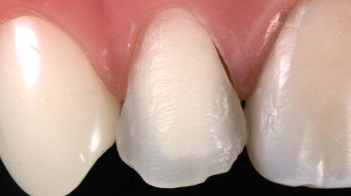
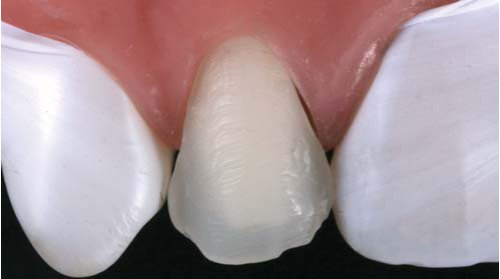
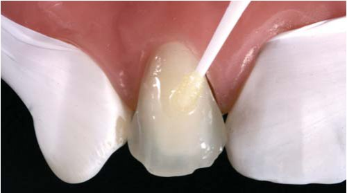
Практичні рекомендації щодо внесення шарів
Піднебінна стінка (імітація емалі) — емалевий відтінок Церам-Ікс дуо+. Імітація дентину — дентиновий відтінок Церам-Ікс дуо+
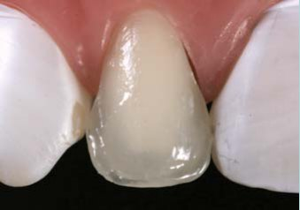
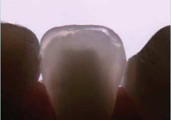
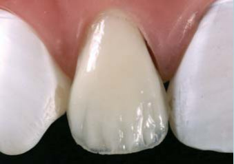
Контактні поверхні — емалевий відтінок Церам-Ікс дуо+. Вестибулярна емаль — емалевий відтінок Церам-Ікс дуо+
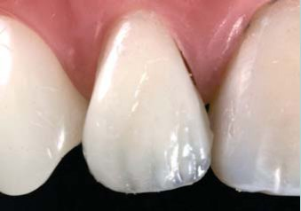
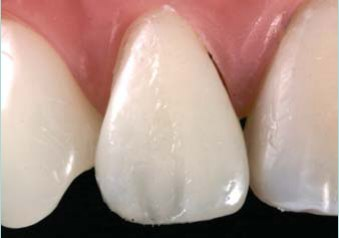
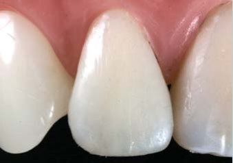
Велика частина реставрації складається з дентину. Товщина емалевих шарів Церам-Ікс дуо+ в середньому близько 0,5 мм — вона є оптимальною і не змінює закладену яскравість. При товщині шару менше 0,5 мм результат вийде занадто опаковий, при більшій товщині спостерігатиметься зсув за яскравістю в сірий бік через підвищену транслюценцію емалевого шару.
Нанотехнологія, використана при створенні композитних матеріалів Церам-Ікс Моно+ і Церам-Ікс дуо+, забезпечує стійкий і легкодосяжний блиск реставрацій. Важливо обов'язково дотримуватися протоколу фінішної обробки та полірування.
Для отримання стандартного результату (без високого рівня блиску)
Перший етап — використання алмазного бору (≤30 мікрон) з водяним спреєм (≤200 000 rpm) до тих пір, доки поверхня не стане рівномірною (груба обробка, контурування) (фото 20).
Другий етап — використання головок Енхенс/Enhance (Дентсплай) на середній швидкості зі змінним тиском, доки видимі нерівності і подряпини не будуть видалені.
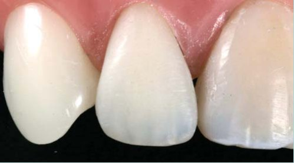
Для отримання високого рівня блиску
Третій етап — використання пасти ПризмаГлосс/PrismaGloss (Дентсплай) на середній швидкості. Полірування виконується спочатку без води, потім з додаванням води краплинами до появи блискучої поверхні.
Четвертий етап — полірування пастою ПризмаГлосс Екстрафайн/PrismaGloss Extrafine на середній швидкості спочатку без води, потім з додаванням води краплинами до появи максимального блиску (фото 21-24).
Можливе застосування головок ПоуГоу/PoGo — форм з алмазним мікронаповнювачем. Рухи повинні бути плавними, в один бік, з контролем тиску, що докладається, на швидкості до 20000 rpm без води.
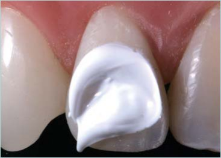
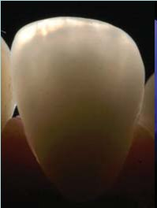
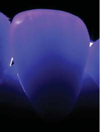

Ряд особливих властивостей нанокерамічного композиту Церам-Ікс дуо+, а саме виражена опалесценція, легкість підбору відтінків і стійкість до підвищених механічних навантажень виконаної реставрації, визначають вибір Церам-Ікс. Клінічний досвід мого особистого застосування цього композиту близько 6 років. У практиці я використовую обидві системи, як Церам-Ікс Моно+, так і Церам-Ікс дуо+. Важливо зазначити, що компанія постійно вдосконалює цей матеріал. За час його існування на ринку, а це 10 років, було модифіковано пластичні властивості емалевих відтінків Церам-Ікс дуо+, поліпшено полірованість і збереження блиску. Спостерігаючи за віддаленими результатами робіт, можна відзначити відсутність сколів реставрацій, збережену чудову інтеграцію композиту до твердих тканин, відсутність профарбовування реставрацій. При візуальному спостереженні можна відзначити гарну динаміку світла в реставраційних конструкціях. У міру нагромадження досвіду роботи з Церам-Ікс у нашу практику було додано композитні барвники, що ще більше «оживило» виконані роботи. Моя позиція у реставраційній стоматології: «Ставтеся до кожної реставрації, як до витвору мистецтва. Створюйте свої власні шедеври — у прямому розумінні цього слова». І Церам-Ікс — чудовий матеріал для досягнення цієї мети.
Висновок
Для нанокерамічного композитного матеріалу Церам-Ікс характерні міцність, ефективність, простота і чіткість колірних гам. При мінімальній кількості відтінків, а їх 7 в кожній із концепцій, лікар-стоматолог може досягти високого рівня естетики. Натуральну естетику легко відтворити, тому що цей принцип був закладений в основу під час розробки матеріалу Церам-Ікс.
Література
- Новиков В.С. Новое поколение композитов CeramX. Новости Дентсплай. —2004;10;20.
- Ceram X Scientific Compendium 2007-10-17 Konstanz.
- Dietschi D. Layering concepts in anterior composite restorations. J Adhes Dent 2001;3:71-80.
- Manauta J., Salat A. Layers. Quintessence International, 2012.